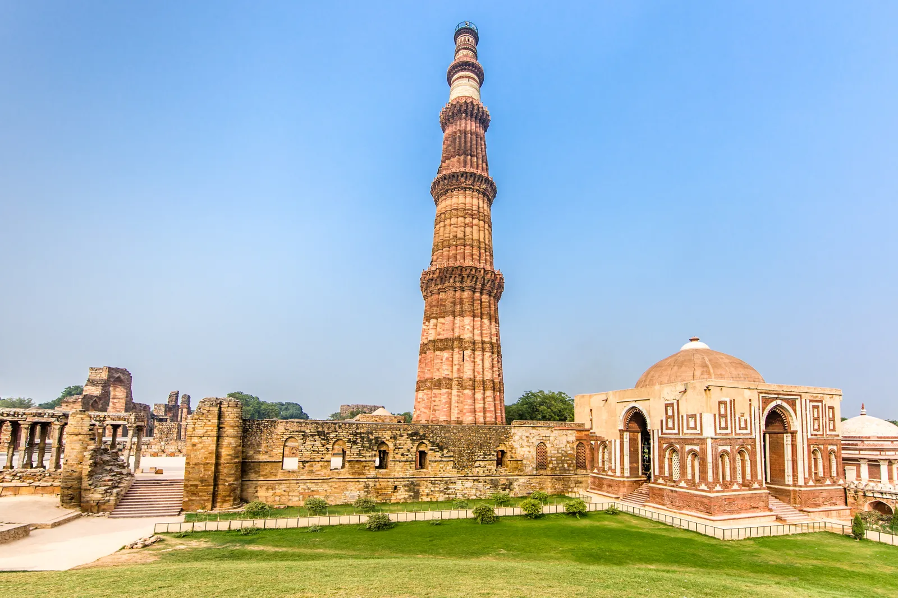
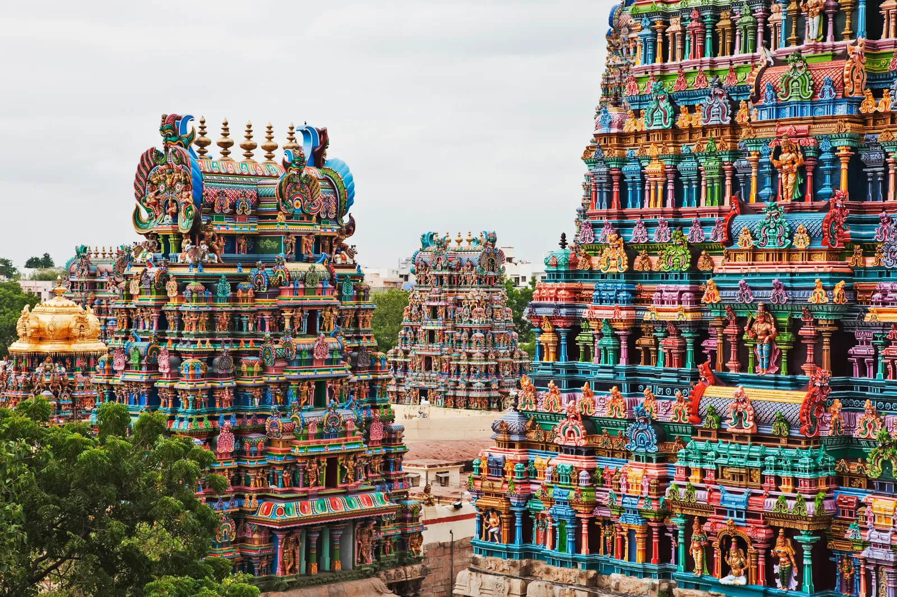
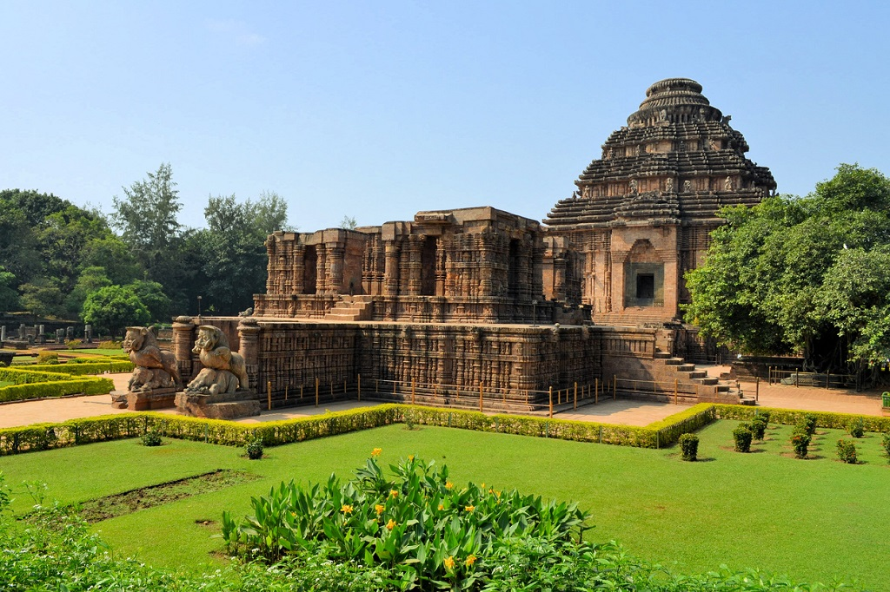

Cultural identity plays a vital role in shaping who we are, influencing not only how we see the world but also how we interact with others. Growing up in a multicultural environment, I have come to appreciate the blend of traditions, languages, and values that shape my understanding of self. My cultural heritage—rooted in [mention your background, e.g., Hispanic, Asian, African, etc.]—has provided me with a unique perspective on the world, helping me embrace diversity and develop empathy. Whether it's the food we share at family gatherings, the customs passed down through generations, or the language we speak, each part of my culture has contributed to my sense of belonging and shaped my approach to challenges. At the same time, navigating multiple cultural identities has taught me the importance of adaptability and understanding. Embracing my cultural background has not only deepened my sense of pride but has also motivated me to connect with others from diverse backgrounds, fostering a community where differences are celebrated.
 indian family image
indian family image
India's culture is one of the oldest and most diverse in the world, shaped by centuries of history, tradition, and spirituality. It is a rich blend of languages, religions, festivals, art, music, dance, and cuisine, varying across different regions. Hinduism, Islam, Christianity, Sikhism, Buddhism, and Jainism are among the major religions that influence India's cultural landscape. Traditional festivals like Diwali, Holi, Eid, Christmas, and Pongal showcase the country's unity in diversity. Indian cuisine, known for its variety of spices and flavors, differs from North to South. Classical dance forms like Bharatanatyam, Kathak, and Odissi, along with vibrant folk traditions, reflect India's artistic heritage. Despite modernization, India continues to preserve its deep-rooted customs while adapting to global influences, making its culture a unique fusion of tradition and contemporary lifestyle.
| Dance Form | State | Culture & Significance |
|---|---|---|
| Bharatanatyam | Tamil Nadu | One of the oldest classical dances, performed in temples as a form of devotion. |
| Kathak | Uttar Pradesh | A storytelling dance form influenced by Persian and Mughal cultures. |
| Kathakali | Kerala | Known for elaborate costumes and facial expressions, depicting mythological stories. |
| Odissi | Odisha | A graceful dance that originates from temple traditions of Odisha. |
| Kuchipudi | Andhra Pradesh | A blend of dance and drama, often performed as a dance-drama form. |
| Manipuri | Manipur | Soft and spiritual dance form inspired by Lord Krishna's Rasleela. |
| Bihu | Assam | A folk dance performed during the Assamese New Year celebrations. |